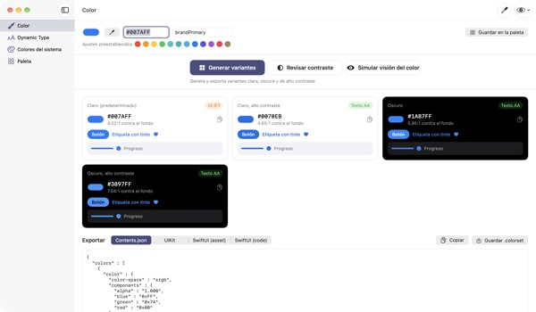
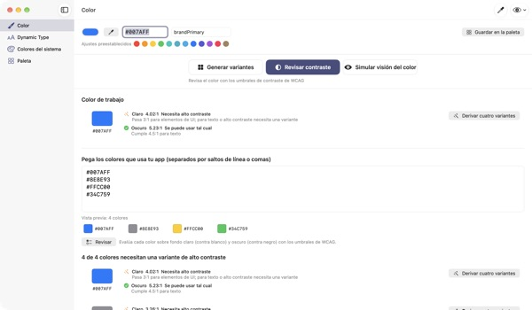
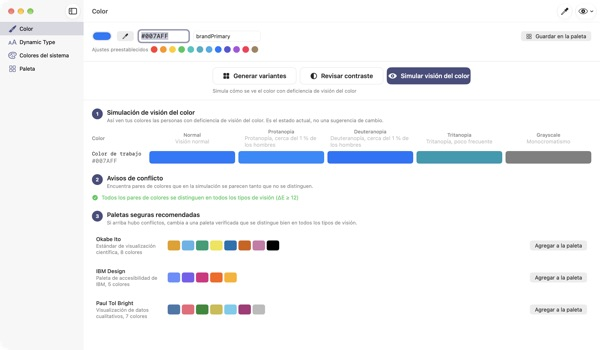
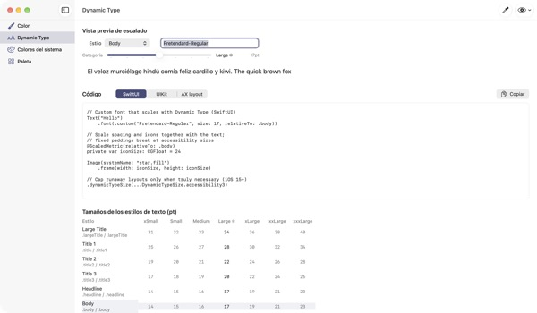

Un color de entrada,
cuatro apariencias de salida
Los colores del sistema se ajustan solos al modo oscuro y a Aumentar contraste. Tus colores de marca no. TetraTint toma un color del modo claro, crea las variantes clara, clara con alto contraste, oscura y oscura con alto contraste, y las exporta directo a Xcode.
Todas las funciones son gratis. Requiere macOS 14 o posterior.

Prueba tu color de marca
Pega un valor hex o toca un ajuste preestablecido. Con el mismo cálculo que la app, verás al instante las cuatro variantes y su contraste.
¿Tu color de marca se pierde en modo oscuro?
El azul que elegiste en modo claro se ve apagado sobre negro, y quien tiene activado Aumentar contraste apenas puede leer el texto. Buscar un color para cada apariencia y medir el contraste a mano se lleva medio día. TetraTint crea las variantes como cambian los colores del sistema entre apariencias y te dice en ese momento si cada una pasa.
Revisa de una vez todos los colores que usas
Pega toda la lista de hex de tu app y clasifica cada color: se puede usar tal cual, necesita alto contraste o es solo decorativo.
Con un clic, un color con problemas se convierte en cuatro variantes guardadas en tu paleta. Te sirve para preparar la etiqueta de accesibilidad Contraste suficiente en la App Store.

Míralo con los ojos de una persona daltónica
Simula tu paleta con protanopía, deuteranopía, tritanopía y escala de grises, y te avisa de los pares que se vuelven difíciles de distinguir.
Carga con un clic las paletas aptas para daltonismo Okabe–Ito, IBM y Paul Tol, o usa el botón del ojo arriba a la derecha para ver toda la app así.

Tus fuentes personalizadas también siguen el tamaño de texto
Consulta los 11 estilos de texto en 7 tamaños y mueve un control deslizante para ver el tamaño real.
Escribe el nombre PostScript de tu fuente y obtén código para UIKit, SwiftUI y @ScaledMetric, además del código que cambia el diseño con texto grande.

Tres pasos para empezar
- 1
Agrega un color base
Pega un hex, toma uno de cualquier parte de la pantalla con el gotero o elige un ajuste preestablecido.
- 2
Revisa las cuatro variantes
Lee las insignias de contraste y ajusta las variantes que no van con tu marca.
- 3
Exporta a Xcode
Copia o guarda como Contents.json, .colorset o código de UIKit y SwiftUI.
Cómo se crean las variantes y qué significan las insignias
- Claro (predeterminado)
- Tu color tal como lo escribiste
- Claro, alto contraste
- Un poco más saturado y oscurecido hasta llegar a 4.5:1 sobre blanco
- Oscuro
- Un poco más claro e intenso (luminosidad +5, saturación +3)
- Oscuro, alto contraste
- Aclarado hasta llegar a 7:1 sobre negro
- Texto AA
- 4.5:1 o más contra el fondo, sirve para texto
- UI 3:1
- 3:1 o más, sirve para botones e íconos pero no para texto
- Bajo
- Menos de 3:1, no lo uses para texto, íconos ni estados
- Exportar
- Contents.json · .colorset · UIKit · SwiftUI, o toda la paleta en un solo .xcassets
Los valores de referencia de los colores del sistema vienen de las Human Interface Guidelines de Apple y pueden cambiar con las actualizaciones del sistema. En tu app publicada, usa las API de colores del sistema.
Todas las funciones son gratis
TetraTint
- Crear y exportar cuatro variantes
- Revisión de contraste para una lista de hex
- Simulación de visión del color y paletas aptas para daltonismo
- Tabla de Dynamic Type y generación de código
- Referencia de colores del sistema y exportación de la paleta a .xcassets
Apoya al desarrollador (opcional)
- No hay nada bloqueado
- Si te sirvió, puedes dejar una propina en Ajustes
La propina no cambia ninguna función.
Sin cuenta ni anuncios. Tu paleta se guarda solo en esta Mac.
Preguntas frecuentes
Las variantes generadas no van con mi marca.
Ajusta cualquier variante con el selector de color de su tarjeta. Regenerar todo descarta tus cambios manuales y vuelve a crear todo a partir del color base.
¿Cómo se calculan las variantes?
Siguen cómo cambian de verdad los colores del sistema de Apple entre apariencias: un poco más claras e intensas en oscuro, al menos 4.5:1 sobre blanco en claro con alto contraste y al menos 7:1 sobre negro en oscuro con alto contraste.
¿Qué significa una advertencia de visión del color?
Que con esa simulación la diferencia entre dos colores baja de ΔE 12 y cuesta distinguirlos. No dependas solo del color: agrega íconos, patrones o etiquetas, o cambia a una paleta apta para daltonismo.
¿Cómo hago que una fuente personalizada use Dynamic Type?
En Dynamic Type, escribe el nombre PostScript de la fuente y elige un estilo para obtener código de UIKit, SwiftUI y @ScaledMetric. En los tamaños de accesibilidad, Body crece a más del triple, así que evita alturas fijas y lineLimit(1).
Los colores exportados se ven distintos a los del sistema en mi app.
Los valores de referencia de los colores del sistema vienen de las Human Interface Guidelines y pueden cambiar entre versiones del sistema. Usa siempre las API UIColor o Color para los colores del sistema.
¿Dónde se guarda mi paleta?
Solo en tu Mac. No se sincroniza con la nube ni se envía a ningún lado. Consulta la política de privacidad para más detalles.
¿Se guarda el color que tomo con el gotero?
No. Solo lee el valor del color en el punto que eliges y lo usa como color de trabajo. No se guarda ni se envía ninguna imagen de la pantalla.
¿En qué Mac funciona?
En macOS 14 (Sonoma) o posterior. Al exportar, tú eliges dónde se guardan los archivos.
¿Errores, ideas o preguntas? Escríbenos a leeo@kakao.com. Solemos responder en 2 a 3 días.